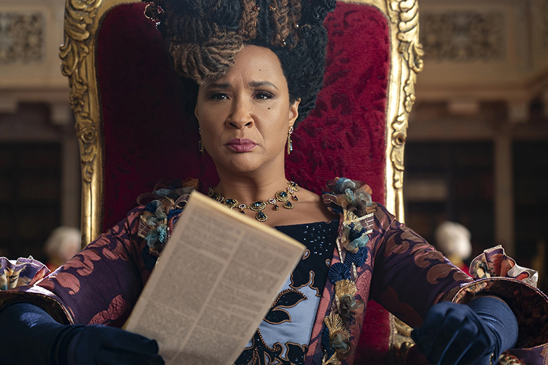
The miniseries revolves around Queen Charlotte consists of two plot lines: one in the present of Bridgerton, beginning in 1814 with the death of the royal heir Princess Charlotte, an event that causes the Queen to pressure her children to marry and produce another royal heir; the other begins in 1761 with Charlotte meeting and marrying King George. The latter explores the King and Queen's marriage and his mental illness.
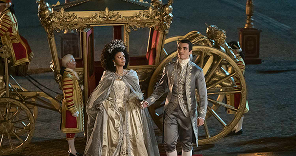
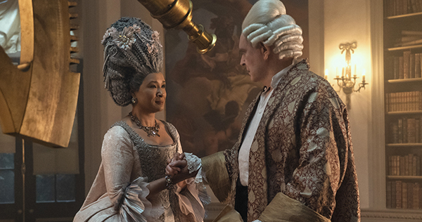
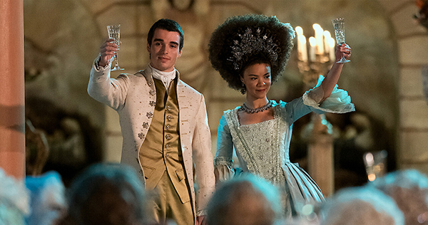
Queen Charlotte is from a small town named Mirow in Northern Germany. After her parents died, she was raised by her brother Duke Adolphus. Against Charlotte's wishes, Adolphus signed a betrothal contract to marry Charlotte off to the King George III of England. They traveled together to London for the wedding.
CHARLOTTE
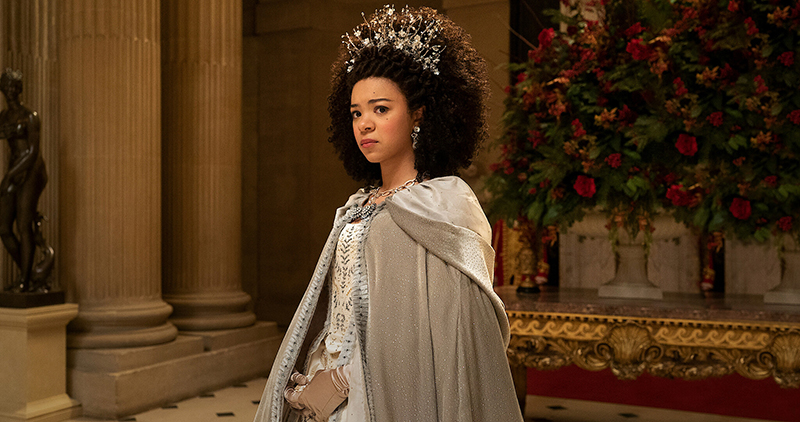
GEORGE
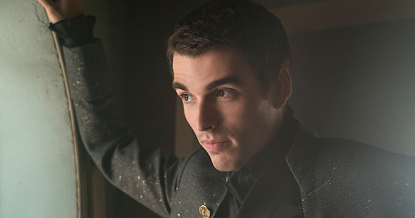
King George was talking to Farmer Crosby about the advantages of using horses in place of oxen when his valet, Reynolds came to get him and said his mother needed him at the palace. He believed the dowager princess had found King George a bride.
Agatha Danbury is a senior matron who is considered one of the most powerful women in London high society. Lady Danbury is the Queen's closest friend and helped her adjust to her position as Queen.
LADY DANBURY
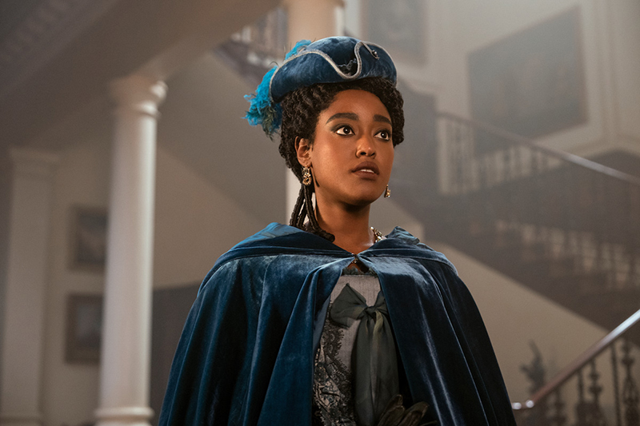
BRIMSLEY
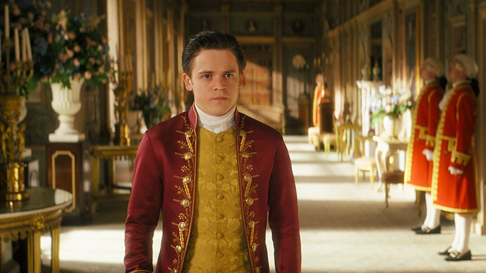
When Charlotte came to London to marry King George III, Brimsley was assigned to work with her, starting with taking her to the seamstress to have her dress fitted.
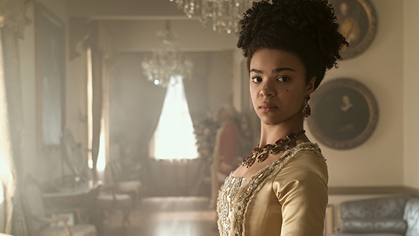
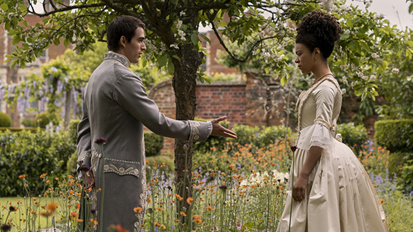
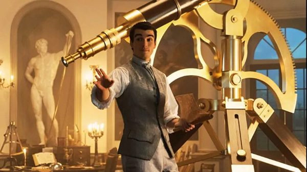